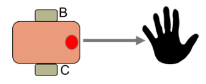
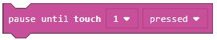
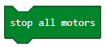
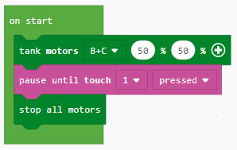
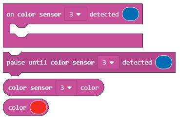
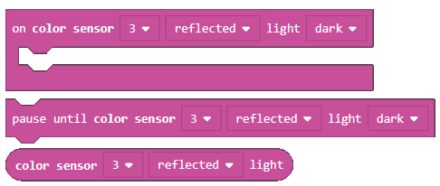
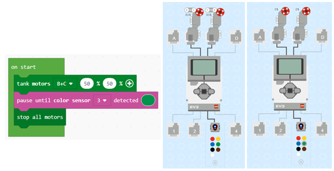
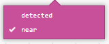
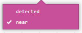
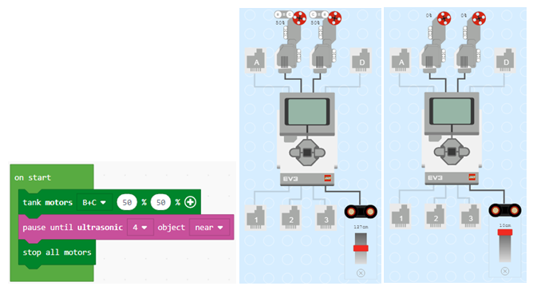

Задача-Използване на сензорите¶
Използване на допирния сензор
Първо, ще създадем програма, позволяваща на робота да се движи докато потребителят докосва сензора с ръката си.
Спрямо задачата, роботът би трябвало да се движи напред. Ще постигнем това, добавяйки блока  (роботът се движи напред).
(роботът се движи напред).
Следващата стъпка би била да завлечем блока  от категория . От падащото меню на този блок ще изберем опция 1, която представя порта, свързан с допирния сензор. Ще натиснем опцията, която реално е условието на сензора. (когато ръката докосне сензора). След отдръпването на ръката, роботът би трябвало да спре, което би се осъществил чрез добавянето на блока . Така роботът е спрян.
Програмата изглежда така:
Свържете EV3 Brick-а с компютъра си чрез USB кабел и свалете .uf2 файла на своя компютър, натискайки бутона  . Завлечете файла на EV3 и той ще бъде готов за работа.
. Завлечете файла на EV3 и той ще бъде готов за работа.
Употреба на цветовия сензор
Цветовия сензор е дигитален сензор, който може да засича цвета или интензитета на светлината, която навлиза през малкото прозорче на лицевата част на сензора. Този сенор може да се изолзва по три различни начина:
Color Mode,
Reflected Light Intensity Mode, and
Ambient Light Intensity Mode.
В първия режим цветовия сензор разпознава седем цвята-черен, син, зелен, жълтт, червен, бял, кафяв и безцветен:

Способността за различаване на цветове означава, че роботът може да се програмира да сортира цветни топки/блокове, да произнесе имената на разпознатите цветове, да спре, щом види червено.
В режима eflected Light Intensity Mode сензорът измерва светлинния интензитет на отразената светлина. Той използва опциите тъмно (много тъмно) и светло (много светло). Така роботът може да бъде програмиран да се движи върху бяла повърхност, докато не засече черна линия или не изтълкува цветово кодираната повърхност или идентификационна карта.
В режим Ambient Light Intensity Mode цветовият сензор измерва силата на светлината, която навлиза през прозорчето, докато роботът се движи, като слънчева светлина или лъч от фенерче. Той също използва опциите тъмно (много тъмно) и светло (много светло). По този начин роботът може да бъде програмиран да пусне аларма по изгрев или да спре да работи при изгасяне на лампите.
Ще демонстрираме работата на светлинния сензор, създавайки програма, която ще позволи на робота да се движи, докато не види цвета зелено. Щом го види-ще спре.
Спрямо задачата, роботът трябва да се движи напред. Това ще стане чрез блока . От категорията ще изберем блока . От падащото меню на този блок ще изберем опция 3, която представя порта, свързан с цветовия сензор. Следващата стъпка би била да изберем цвета от падащото меню натискайки желания цвят (ние избрахме зелено). Роботът трябва да спре, когато види зелено, което ще изпълним чрез блока . Така роботът спира.
Кодът на програмата и симулаторът (роботът се движи напред, докато не види цвета зелено):
Свържете EV3 Brick-а с компютъра си чрез USB кабел и свалете .uf2 файла на своя компютър, натискайки бутона . Завлечете файла на EV3 и той ще бъде готов за работа.
Употреба на ултразвуковия сензор
Ще демонстрираме работата на ултразвуковия сензор, създаайки програма, която ще позволи на робота да се движи, докато не срещне препятствие.
Задачата гласи, че роботът трябва да се движи напред. Ще постигнем това чрез блока .
От категорията ще изберем блока  . От неговото падащо меню ще изберем опция 4, която представя порта, свързанс ултразвуковия сензор. От падащото меню  ще изберем опцията near. Това се осъществява чрез блока . Така роботът ще спре.
. От неговото падащо меню ще изберем опция 4, която представя порта, свързанс ултразвуковия сензор. От падащото меню  ще изберем опцията near. Това се осъществява чрез блока . Така роботът ще спре.
Програмният код и симулаторът (роботът се движи, докато не види препятствие):
Свържете EV3 Brick-а с компютъра си чрез USB кабел и свалете .uf2 файла на своя компютър, натискайки бутона . Завлечете файла на EV3 и той ще бъде готов за работа.